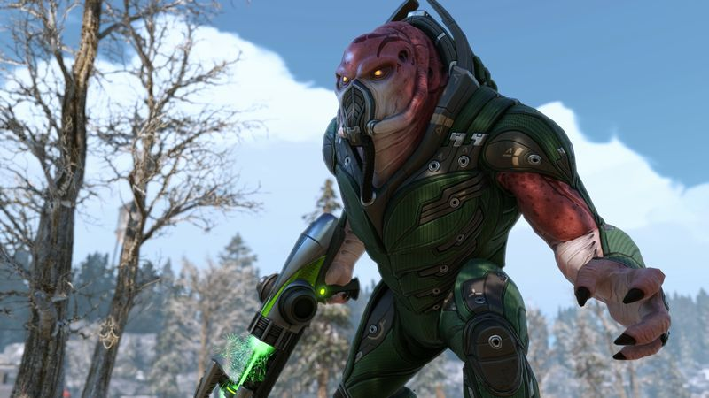
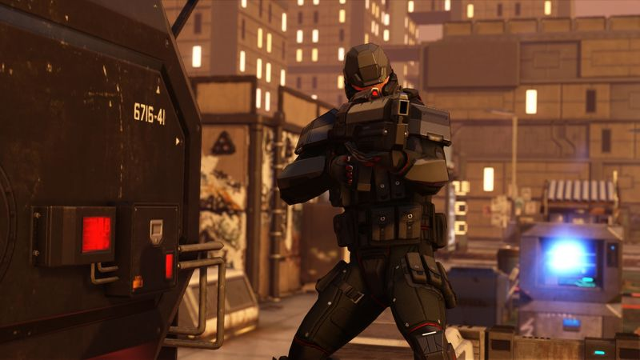

The thirty-second version
The best strategy sequel of the decade.
The dice have been sent to review, and they have chosen violence.
XCOM 2 is what happens when Firaxis gets to make Enemy Unknown again with the safety off. Turn timers force you to commit, the resistance framing gives every mission stakes, and the game rewards the tacticians who read the whole tooltip and the casuals who just want to yell at a screen. It's a sequel that improves on every part of the original. Ironman it if you dare.
Okay, what is this thing?
You've named your Ranger after your seven-year-old. She's flanked, she has a 92% shot, she has a clean line of fire. She misses. She dies. You look at the ceiling for about ninety seconds. Then you close the save. Then you don't. This is XCOM 2, the game that turned all three of us into people who whisper 'come on Karen' at a monitor at 11pm on a work night.
What makes it work is the pressure. Turn timers mean you can't sit and overthink every move, the strategy layer piles on decisions you can't fully afford, and the class system rewards specialisation without forcing it. War of the Chosen builds on all of it, and the mod scene fixes the parts you didn't like. Also, the character customisation lets you have a soldier named Preston Garvey. Do with that what you will.


Why it escaped the group chat
- Turn timers on many missions force fast, committed play instead of overwatch parking.
- Soldiers are permadeath by default and character customisation makes it worse (or better).
- The War of the Chosen expansion changes the campaign so thoroughly it's practically a sequel.
Three dads enter
01
Dad Who Skipped the Tutorial
I named a soldier after my daughter. She died. I put the game away.
I got through the tutorial, made it to about the fourth mission, watched a Ranger named after my kid get one-shot by an ADVENT MEC, and quit for six months. When I came back I played on Rookie with the timers turned off and had a much better time. Sometimes you just want to punch aliens without the emotional damage. I respect that this is the game working.
02
The Descent Guy
Reveal, position, alpha strike, extract. I run a doctrine.
I treat every mission like a chess opening. I know the Sword of Damocles line, I pre-call concealment breaks, and I will physically stand up if you overwatch when I told you to move. I also draw a comparison to Descent's degrees of freedom whenever I can, which isn't often in a grid-based game, and yet. I have notes.
03
Normal-ish Dad
A campaign takes twenty hours and one crying toddler.
Missions are long, the strategy layer punishes bailouts, and Ironman doesn't care that someone spilled milk. I finished a Commander campaign over three months of unbroken Sunday evenings and I'd call it one of my best strategy runs. I also refuse to touch it now that my youngest is a light sleeper. I'm waiting for the kids to move out.
Who it is for and what to watch
Invite these people
- Fans of turn-based tactics who can handle heartbreak
- People who name characters after coworkers they don't like
- Anyone with a working spreadsheet brain and a free weekend
Dad caveats
- The base game is punishing early; War of the Chosen softens some of it
- Timers stress some players; you can mod them out without shame
- A single mission can eat your entire evening
Receipts
The Tactician ran a full Legend campaign on PC over a winter, the All-Rounder finished Commander over three months of Sunday evenings, and the Casual quietly played Rookie with timers off after his first team wipe.